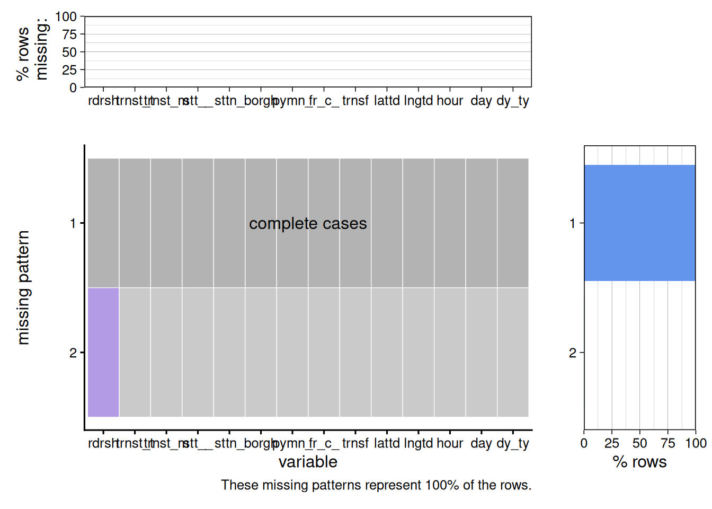
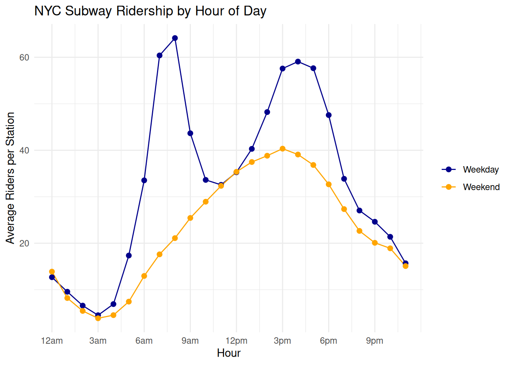
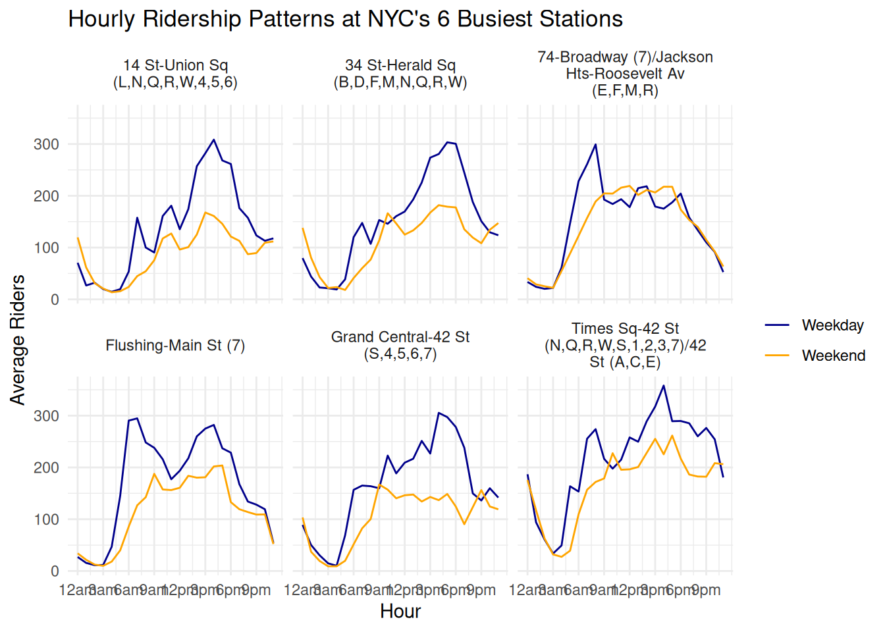
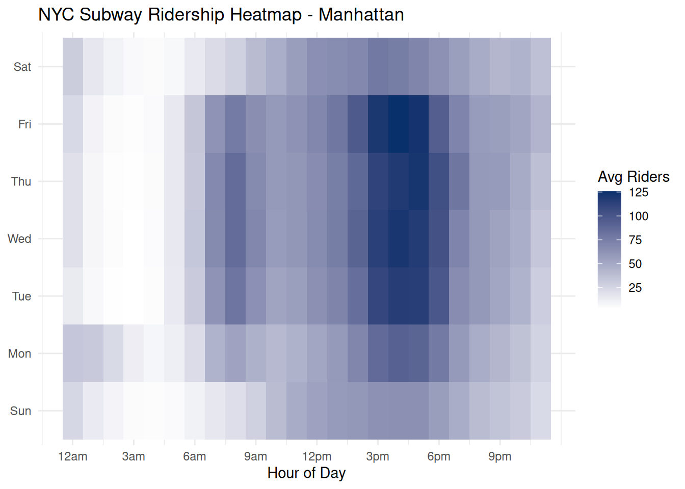
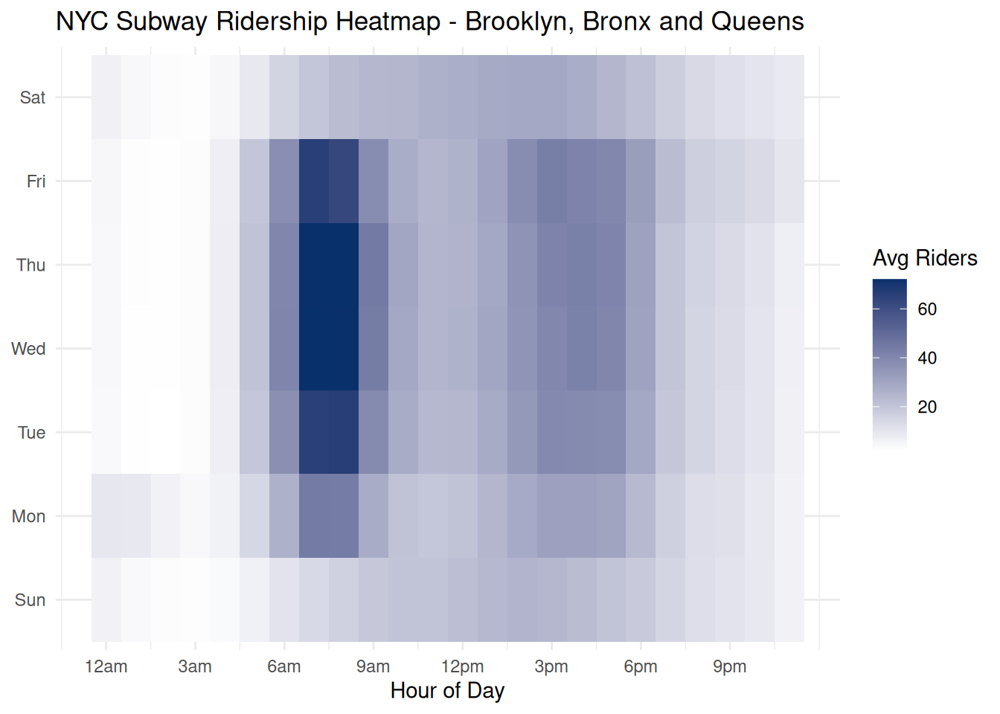
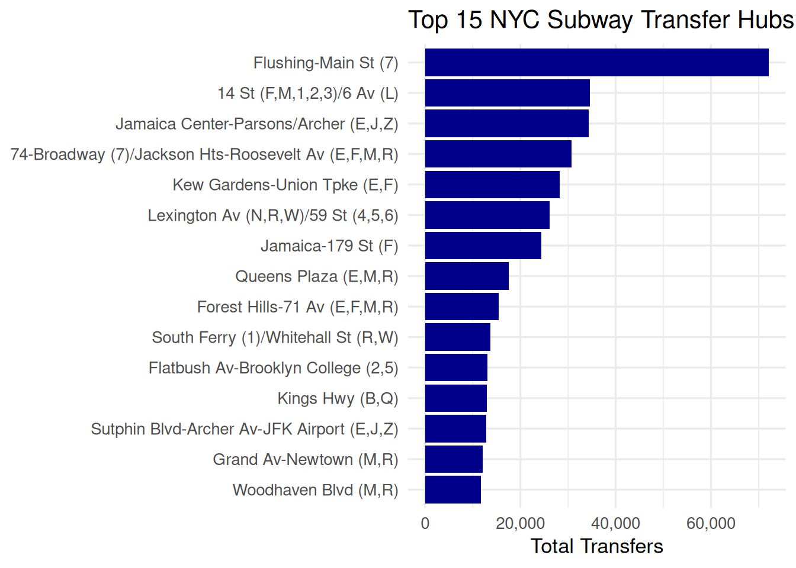
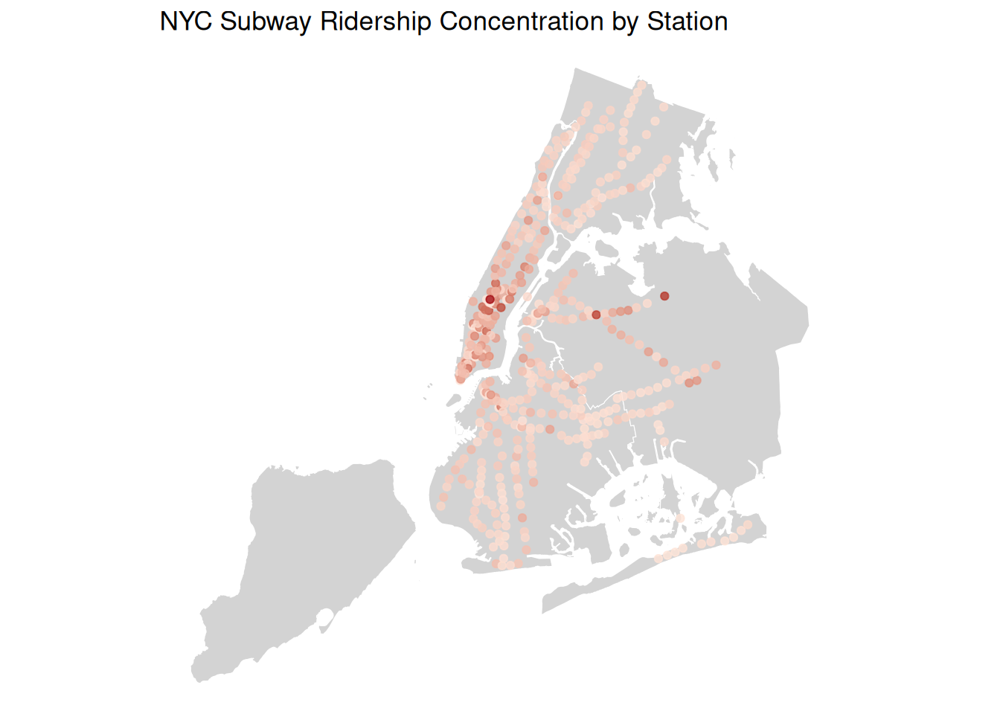
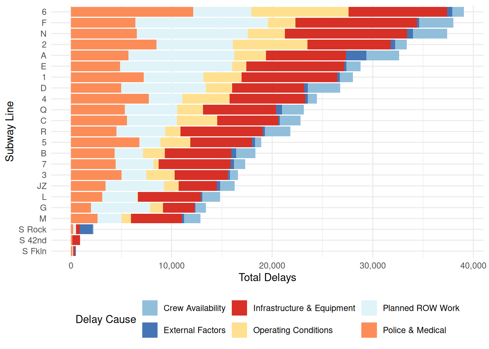

library(tidyverse)
ridership <- read.csv("data/hourlyridership.csv") |>
mutate(
transit_timestamp = mdy_hms(transit_timestamp),
hour = hour(transit_timestamp),
day = wday(transit_timestamp, label = TRUE, abbr = TRUE),
day_type= ifelse(wday(transit_timestamp) %in% c(1,7), "Weekend", "Weekday"),
ridership = as.numeric(ridership)
)13 NYC Subway Ridership and Delays
13.1 Introduction
The NYC subway is one of the busiest transit systems in the world, running 24/7 across four of the five boroughs. In this project, I explore two aspects of the system: ridership patterns and service delays. Specifically, I look at when and where people ride, and which lines experience the most delays and why.
13.2 Data
13.2.1 Description
This project uses two datasets, both publicly available through New York State’s open data portal. The first is the MTA Subway Hourly Ridership dataset, which records the number of riders entering each subway station complex every hour, broken down by payment method and fare class category. The data includes station name, borough, latitude and longitude coordinates, and ridership counts. Due to the large size of this dataset — over 4GB for the full 2020–2024 period — this analysis focuses on one week of data from January 1–7, 2024, resulting in approximately 556,000 rows. The second dataset is the MTA Subway Delay-Causing Incidents dataset, which records monthly delay counts by subway line, day type (weekday vs. weekend), and reporting category (the cause of the delay). This dataset covers all of 2024 and is much smaller. One known issue with the ridership data is that a very small number of rows contain missing or non-numeric ridership values, which were handled using na.rm = TRUE throughout.
13.3 Missing Value Analysis
library(redav)
plot_missing(ridership, num_char = 5)
plot_missing(delays)Error:
! object 'delays' not foundBoth datasets are pretty clean. The delays dataset has no missing values at all. The ridership dataset has a tiny number of missing values only in the ridership column. Since it’s such a small fraction of 556,000 rows, it doesn’t affect the analysis at all.
13.4 Results
13.4.1 When Do New Yorks Ride the Subway?
hourly_avg <- ridership |>
group_by(hour, day_type) |>
summarise(avg_ridership = mean(ridership, na.rm = TRUE))
ggplot(hourly_avg, aes(x=hour, y = avg_ridership, color = day_type))+
geom_line()+
geom_point(size = 2)+
scale_x_continuous(breaks = seq(0,23, 3),
labels = c("12am", "3am", "6am", "9am",
"12pm", "3pm", "6pm", "9pm")) +
scale_color_manual(values = c("Weekday" = "darkblue", "Weekend" = "orange"))+
labs(
title = "NYC Subway Ridership by Hour of Day",
x = "Hour",
y = "Average Riders per Station",
)+
theme_minimal()+
theme(legend.title = element_blank())
The hourly ridership line chart reveals a clear and intuitive pattern: weekday ridership follows a classic double-peak shape, with a sharp morning rush hour around 8am and an evening peak around 5-6pm. Weekend ridership, by contrast, is lower overall and more evenly distributed throughout the day, peaking in the early afternoon. This reflects the commuter-driven nature of weekday subway use versus the more leisure-oriented weekend ridership.
ridership |>
group_by(station_complex)|>
summarise(total = sum(ridership, na.rm = TRUE)) |>
slice_max(total, n = 6)# A tibble: 6 × 2
station_complex total
<chr> <dbl>
1 Times Sq-42 St (N,Q,R,W,S,1,2,3,7)/42 St (A,C,E) 302303
2 Flushing-Main St (7) 253457
3 74-Broadway (7)/Jackson Hts-Roosevelt Av (E,F,M,R) 245426
4 Grand Central-42 St (S,4,5,6,7) 225663
5 34 St-Herald Sq (B,D,F,M,N,Q,R,W) 214831
6 14 St-Union Sq (L,N,Q,R,W,4,5,6) 194189top6 <- c("Times Sq-42 St (N,Q,R,W,S,1,2,3,7)/42 St (A,C,E)",
"Flushing-Main St (7)",
"74-Broadway (7)/Jackson Hts-Roosevelt Av (E,F,M,R)",
"Grand Central-42 St (S,4,5,6,7)",
"34 St-Herald Sq (B,D,F,M,N,Q,R,W)",
"14 St-Union Sq (L,N,Q,R,W,4,5,6)")
top6_data <- ridership |>
filter(station_complex %in% top6) |>
group_by(station_complex, hour, day_type) |>
summarise(avg_ridership = mean(ridership, na.rm = TRUE))
ggplot(top6_data, aes(x= hour, y = avg_ridership, color = day_type))+
geom_line()+
facet_wrap(~station_complex, labeller = label_wrap_gen(25))+
scale_x_continuous(breaks = seq(0,23, 3),
labels = c("12am", "3am", "6am", "9am",
"12pm", "3pm", "6pm", "9pm"))+
scale_color_manual(values = c("Weekday" = "darkblue", "Weekend" = "orange"))+
labs(
title = "Hourly Ridership Patterns at NYC's 6 Busiest Stations",
x = "Hour",
y = "Average Riders"
)+
theme_minimal() +
theme(legend.title = element_blank())
Across all six stations, weekday ridership follows a clear double peak, a morning rush around 8-9am and an evening rush around 5-6pm, while weekends are flatte…Across all six stations, weekday ridership follows a clear double peak, a morning rush around 8-9am and an evening rush around 5-6pm, while weekends are flatter and more spread out. One interesting quirk is that this dataset includes New Year’s Day, which is visible in the Times Square panel where ridership spikes unusually high around midnight, likely reflecting New Year’s Eve crowds heading home after the ball drop. Flushing-Main St and 74-Broadway show a notably different pattern where ridership peaks early in the morning then slopes downward, suggesting these outer borough stations serve residential commuters heading into Manhattan for work. The Manhattan stations like Grand Central and Times Square tell the opposite story, with stronger afternoon and evening peaks as workers arrive and then leave at the end of the day.
heatmap_data <- ridership |>
filter(borough == "Manhattan") |>
group_by(hour, day) |>
summarise(avg_ridership = mean(ridership, na.rm = TRUE))
ggplot(heatmap_data, aes(x = hour, y = day, fill = avg_ridership)) +
geom_tile() +
scale_fill_gradient(low = "white", high = "#08306b") +
scale_x_continuous(breaks = seq(0, 23, 3),
labels = c("12am","3am","6am","9am",
"12pm","3pm","6pm","9pm")) +
labs(
title = "NYC Subway Ridership Heatmap - Manhattan",
x = "Hour of Day",
y = NULL,
fill = "Avg Riders"
) +
theme_minimal()
heatmap_data <- ridership |>
filter(borough != "Manhattan") |>
group_by(hour, day) |>
summarise(avg_ridership = mean(ridership, na.rm = TRUE))
ggplot(heatmap_data, aes(x = hour, y = day, fill = avg_ridership)) +
geom_tile() +
scale_fill_gradient(low = "white", high = "#08306b") +
scale_x_continuous(breaks = seq(0, 23, 3),
labels = c("12am","3am","6am","9am",
"12pm","3pm","6pm","9pm")) +
labs(
title = "NYC Subway Ridership Heatmap - Brooklyn, Bronx and Queens",
x = "Hour of Day",
y = NULL,
fill = "Avg Riders"
) +
theme_minimal()
The heatmaps make it easy to spot patterns at a glance. The outer boroughs peak sharply in the morning then fade, while Manhattan stays consistently busy from midday through evening. Sunday is noticeably lighter across both, and the 2am to 5am block is almost white everywhere, confirming the subway’s quietest hours regardless of borough.
13.4.2 Transfers
transfer_totals <- ridership |>
group_by(station_complex) |>
summarise(total_transfers = sum(transfers)) |>
slice_max(total_transfers, n = 15)
ggplot(transfer_totals, aes(x = total_transfers,
y = reorder(station_complex, total_transfers))) +
geom_bar(stat = "identity", fill = "darkblue") +
scale_x_continuous(labels = scales::comma) +
labs(
title = "Top 15 NYC Subway Transfer Hubs",
x = "Total Transfers",
y = NULL
) +
theme_minimal(base_size = 13)
Transfers here count riders who entered the subway via a free bus-to-subway or out-of-network transfer. The top stations are almost entirely in Queens, which tells a clear story: outer borough residents rely heavily on buses to reach the subway, then ride into Manhattan. Flushing-Main St leads by a huge margin, reflecting its massive bus terminal. Jamaica Center and 74-Broadway follow, all serving as key entry points where Queens commuters switch from surface transit to the subway system.
13.4.3 Where is Ridership Concentrated?
library(sf)
nyc <- st_read("data/nybb1.shp")Reading layer `nybb1' from data source
`/home/runner/work/3702project/3702project/data/nybb1.shp'
using driver `ESRI Shapefile'
Simple feature collection with 5 features and 4 fields
Geometry type: MULTIPOLYGON
Dimension: XY
Bounding box: xmin: 913175.1 ymin: 120128.4 xmax: 1067383 ymax: 272844.3
Projected CRS: NAD83 / New York Long Island (ftUS)nyc <- st_transform(nyc, crs = 4326)
station_total <- ridership |>
group_by(station_complex, latitude, longitude)|>
summarise(total_ridership = sum(ridership, na.rm = TRUE))|>
mutate(
latitude = as.numeric(latitude),
longitude = as.numeric(longitude)
)
ggplot() +
geom_sf(data = nyc, fill = "lightgray", color = "white") +
geom_point(data = station_total,
aes(x = longitude, y = latitude,
color = total_ridership),
size = 1.5, alpha = 0.8) +
scale_color_gradient(low = "#fee5d9", high = "#a50f15")+
labs(
title = "NYC Subway Ridership Concentration by Station",
x = NULL,
y = NULL
) +
theme_void() +
theme(legend.position = "none")
Ridership is heavily concentrated in Midtown Manhattan, shown by the darkest red dots. The further you get from Manhattan, the lighter the dots become, reflecting lower ridership at outer borough stations. Staten Island has no subway coverage at all, which is visible from the empty borough on the left.
13.4.4 What Is Causing Subway Delays?
delays <- read_csv("data/mtadelays.csv")
cause_totals <- delays |>
group_by(line, reporting_category) |>
summarise(total_delays = sum(delays, na.rm = TRUE))
ggplot(cause_totals, aes( x = total_delays,y=reorder(line, total_delays), fill = reporting_category))+
geom_bar(stat = "identity")+
scale_x_continuous(labels = scales::comma)+
labs(
x = "Total Delays",
y = "Subway Line",
fill = "Delay Cause"
)+
scale_fill_manual(values = c(
"Infrastructure & Equipment" = "#d73027",
"Police & Medical" = "#fc8d59",
"Operating Conditions" = "#fee090",
"Planned ROW Work" = "#e0f3f8",
"Crew Availability" = "#91bfdb",
"External Factors" = "#4575b4"
))+
theme_minimal()+
theme(legend.position = "bottom")
Lines 6, F, and N are the most delayed in the system, each exceeding 35,000 incidents in 2024. Police and Medical incidents (orange) are the single largest cause of delays across almost every line, which is surprising as most people would assume aging infrastructure is the main culprit. Infrastructure and Equipment failures (red) are a close second. Shuttle lines S Rock, S 42nd, and S Fkln have barely any delays given their short routes.
13.5 Conclusion
This project looked at NYC subway ridership and delays using two datasets from New York State’s open data portal. The biggest takeaways are that ridership is heavily driven by the workweek, concentrated in Manhattan, and fed by bus networks in outer borough Queens. On the delays side, Police and Medical incidents turned out to be the leading cause, which was unexpected. The main limitation is that the ridership data only covers one week in January, so seasonal patterns are not captured. Future work could explore a full year of ridership data or dig deeper into the relationship between ridership volume and delay frequency.